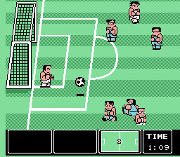
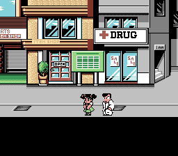
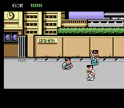
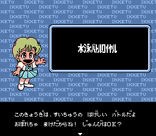

Маленькое руководство по превращению вашей Linux машины в
игровую платформу
Часть 1
Иван Зенков
[email protected]
Итак, зададимся целью превратить свой Linux в игровую
платформу. То есть именно в платформу, а не просто ПК с
эмулятором Windows, на борту. Впрочем без эмуляторов нам всё
равно не обойтись, потому данное руководство может попросту
послужить кратким обзором современных Linux-эмуляторов игровых
приставок. А в первую очередь именно они, будучи первоначально
созданные для игры, имеют в своём запасе, огромное колличество
невероятных шедевров game-индустрии, как японской так и
американской (впрочем надо сказать, что Европа тоже не
отставала, по большей части, её французская половинка).
Поскольку конечная наша цель это та самая "игровая
платформа", то эмулировать мы будем по возможности всё подряд.
А начнём с...
Nintendo Entertainment System (NES, Famicom)
Эта приставка известна почти каждому жителю бывшего СССР,
потому что где-то 90-x годах она появилась у нас в продаже под
куда более звучным для русского уха названием. Называлась она
"Денди" (Famicom это её японское название) и больше мне ничем
не запомнилась. В то время уже по всему миру эта приставка
почти потеряла свой рынок, посколько создана она была в 84-85
годах и уже порядком успела устареть. Приставка умерла, а игры
остались. Надо сказать, что я до сих пор поражаюсь, как с
такими-то ресурсами люди умудрялись делать потрясающие игры.
Вот именно в них мы и будем сейчас играть (причём картриджи
нам для этого не понадобятся).


Для Linux написано несколько эмуляторов NES, но стоит
отметить, что все они ужасно уступают своим Windows-аналогам
как возможностями, так и интерфейсом. Реально из них можно
выбрать только два. Первый - это Tuxnes, а второй, пока почти
не поддерживаемый (но достаточно развитый), - Fceultra.
Tuxnes - это
небольшой (около 194 kB) эмулятор, поддерживающий все
"стандартные" возможности. Как-то: игра вдвоём на одной
клавиатуре (ужасно неудобно, клавиши не поддаются настройке и
расположены более чем чудно, от чего мы с "ассистентом" себе
чуть пальцы не переломали и пришли к решению - прервать
эксперимент), настройка звука (стандартные возможности, смена
битрейта и т.п.), сохранение игры в произвольном месте
(загрузка - тоже самое), создание скриншота нажатием одной
клавиши (точно не помню, но кажется он создаётся в достаточно
увесистом bmp формате), управление частотой кадров, изменение
размера игрового окна и т.д. Но, несмотря на это, играть на
нём неудобно. Помимо того недостатка с управлением, о котором
я уже говорил выше, там есть ужасно неприятная деталь, а
именно - очень низкая скорость. На моём стареньком Athlon 700
с 640Mb оперативной памяти, при разрешении где-то 320 на 240,
он тормозил как заправский 3D shooter. Да, что там как
shooter? У меня ни одна стрелялка так не тормозила. Именно
из-за этого я бы не советовал его использовать, как не
советовал бы и использовать Fceultra (поскольку помимо
прочего, она ещё и плоховато работает с некоторыми форматами
игр).
Fceultra уже
несколько увесистей (440 kB), впрочем особого "шика" в ней не
наблюдается. Всё те же стандартные возможности. Правда вот
игры в двоём здесь я уже не нашёл. Зато куда проще подключить
joypad, для этого там есть соответствующие опции и прочие
настройки, над которыми я, правда, не экспериментировал ввиду
того, что joypad'а не имею. Что порадовало, так это
использование SDL (отчего всё на порядок быстрей, чем в том же
Tuxnes) и поддержка SVGA (то есть играть можно и без системы X
Window). Потому именно этот эмулятор мы и установим.
В моём дистрибутиве Gentoo установка проходит очень просто.
Набираем
emerge app-emulation/fceultra
и ждём, когда он нам всё установит. У владельцев других же
дистрибутивов, возможно, возникнет ряд проблем (а именно - с
gcc 3.2), но думаю, с бинарной rpm'кой и там установка пройдёт
гладко.
Теперь перейдём к, так сказать, "интерфейсу", особенно если
учесть, что он там отсутствует. То есть он-то, конечно, есть,
в виде ключей командной строки. Предположим, что мы имеем одну
игрушку ввиде файла с расширением .nes, упакованную в zip
архив (эмулятор работает прямо с заархивированными
файлами).
Первая команда (для нас она возможно и будет окончательной)
выглядит так:
fceu-sdl -efx 2 -vmode 5 -ntsccol 1 -sound 48000 -soundvol 1000 game.zip
Давайте разберём ёё по порядку.
Команда fceu-sdl используется только в том случае, если мы
в Иксах, для консоли мы должны вызвать fceu-svga, в остальном
они не имеют отличий. Ключ -efx со значеним 2 включает эффект
"TV blur", если вам это не нужно, можете данную опцию храбро
стереть. -vmode 5, по идеи, должен увеличить картинку до
640x400, у меня почему-то не увеличил. При попытке сделать это
насильно, при помощи -xscale и -yscale программа выдала
"Segmentation fault", пришлось оставить всё как есть. -ntsccol
1 включает цветовую палитру NTSC, кто больше любит PAL, может
убрать эту опцию. -sound 48000 указывает битрейт, -soundvol
1000 громкость. game.zip -- наш файл в zip архиве. Ещё ключом
-f можно включить полноэкранный режим, выключить его же можно
клавишей F4.
При этом вы должны увидеть что-то вроде

или

Если вдруг и у вас вывалится ошибка, попытайтесь удалить
каталог ~/.fceultra/ и попробовать заново.
Вот вроде и всё. Мы добились какой-никакой работы NES на
нашем Linux-компьютере. Осталось только запастись игрушками,
которые легко можно найти, просто в гигантских количествах,
при помощи google или yandex'а, по ключевым словам; roms, nes,
emu-russia, pristavka, kulichki и так далее. Всё это
безусловно warez (даже несмотря на то, что производители, в
большинстве своём, уже давно не поддерживают данные продукты),
но есть и законный способ поиграть в 8-битные игрушки, посетив
http://www.pdroms.de/ где
можно найти, так сказать public-domain
образы.
Продолжение
следует...